Polybion "Imagery"
Polybion é uma empresa mexicana que produz materiais premium de última geração projetados com a natureza e fabricados com biologia. A missão da empresa é trazer desempenho e possibilidade para designers e engenheiros de materiais do século XXI. A empresa usa resíduos de alimentos como matéria-prima e projeta, produz e finaliza seus produtos biomontados sob o mesmo teto para aumentar a sustentabilidade e impulsionar a economia circular.
Em 2022, eles a marca passou por um rebranding e para complementar a bela identidade e o novo site, fui convidado a criar algumas imagens que pudessem demonstrar, de forma elegante, a ligação entre os alimentos utilizados e o couro da Polybion, além de mostrar algumas possibilidades de aplicação.
Cliente: Polybion
Agência: Chaco
Ano: 2022
Gerenciamento de Projeto: Lilly Matão
Design & Direção de Arte: Rogério Lionzo
3D Design: Bruno Faiotto
Website Design: Twoo

 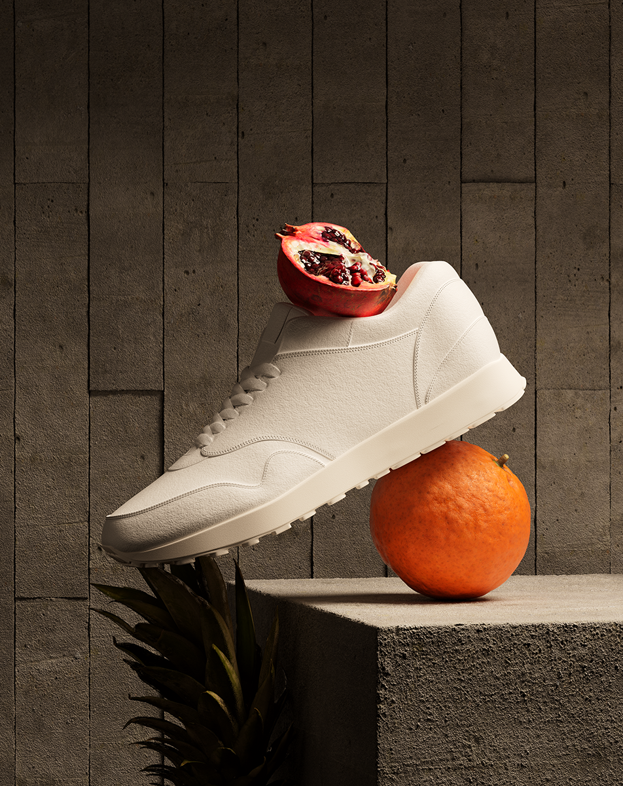
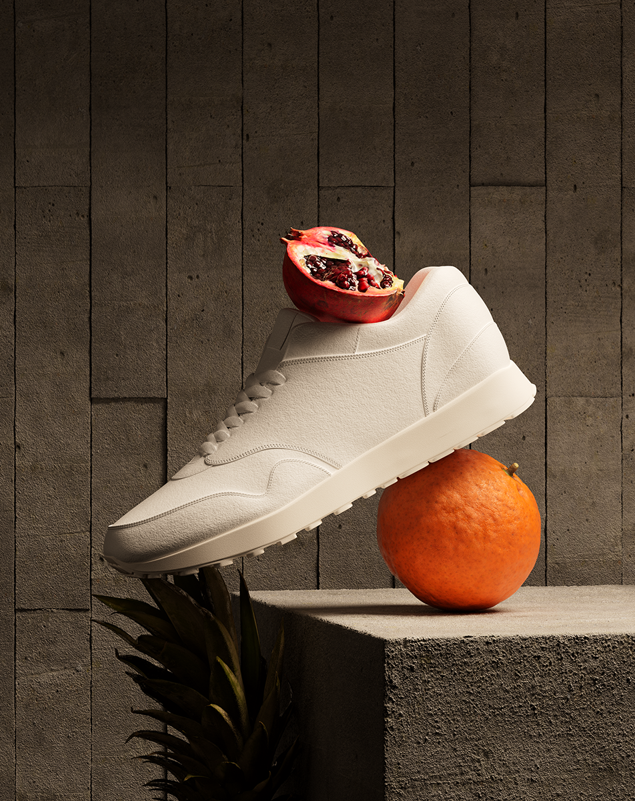
 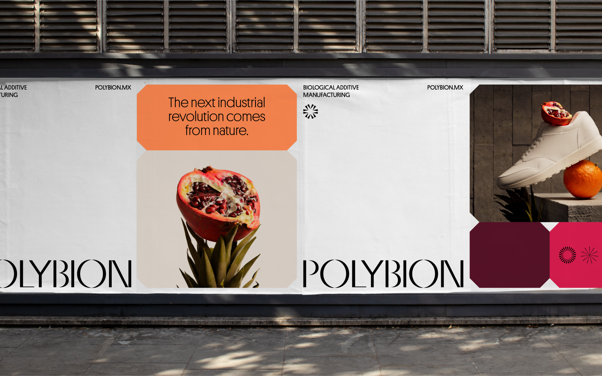
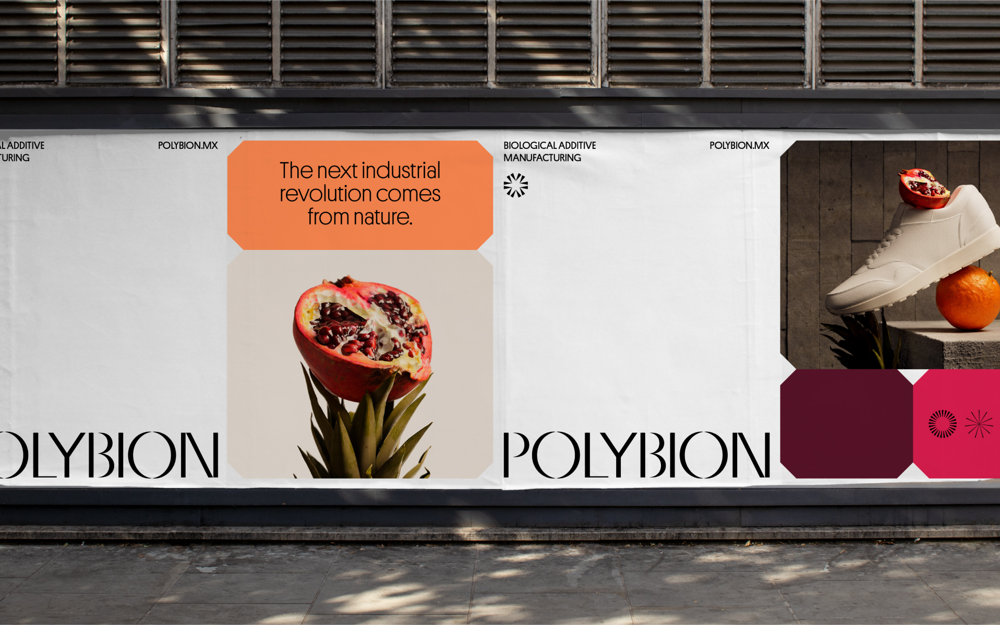


 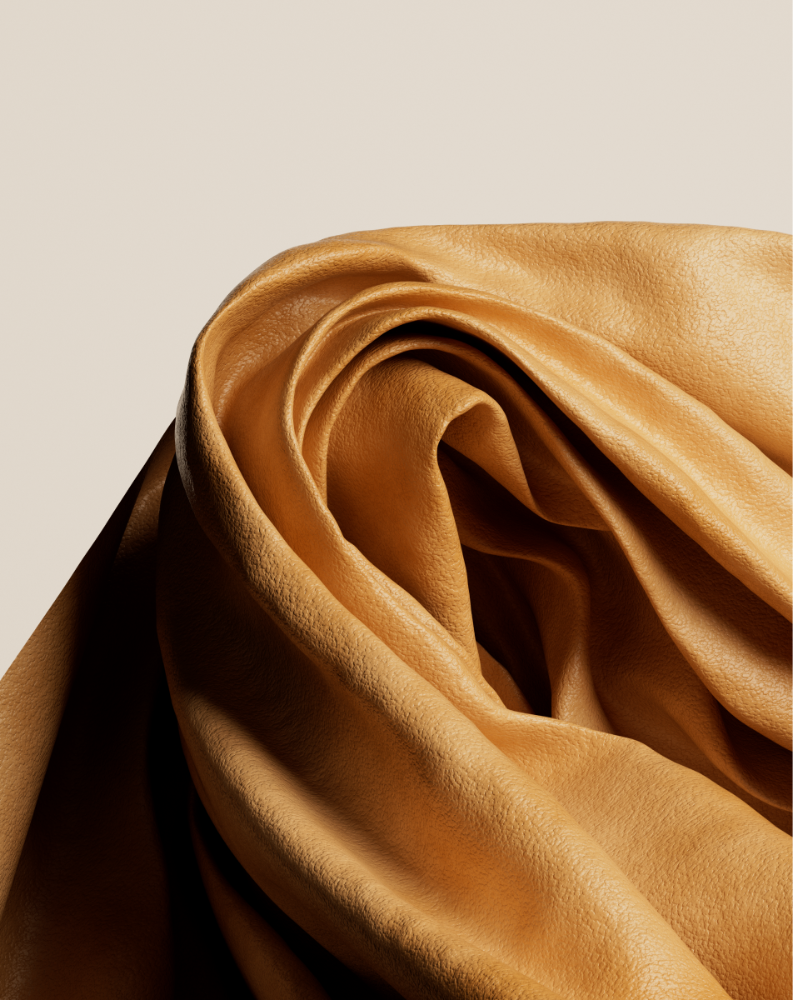
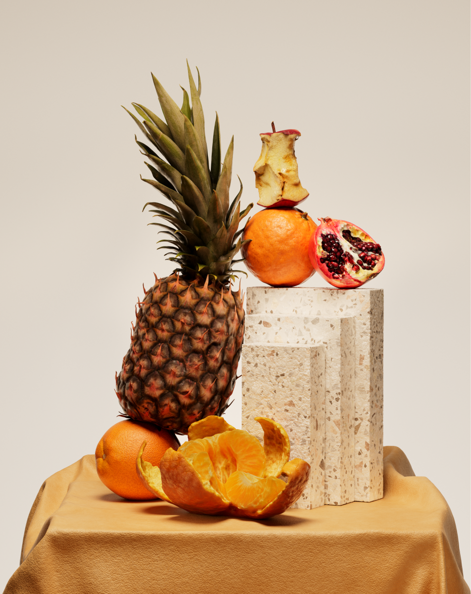
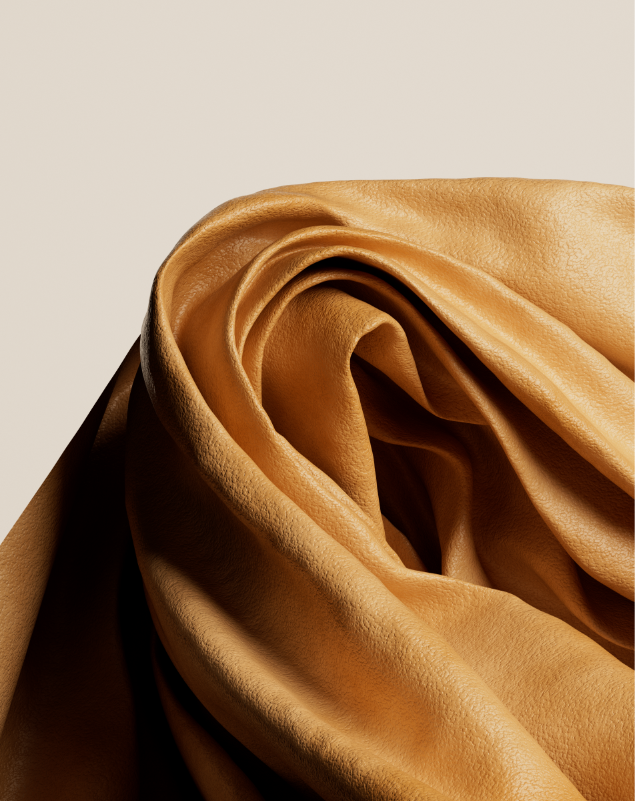
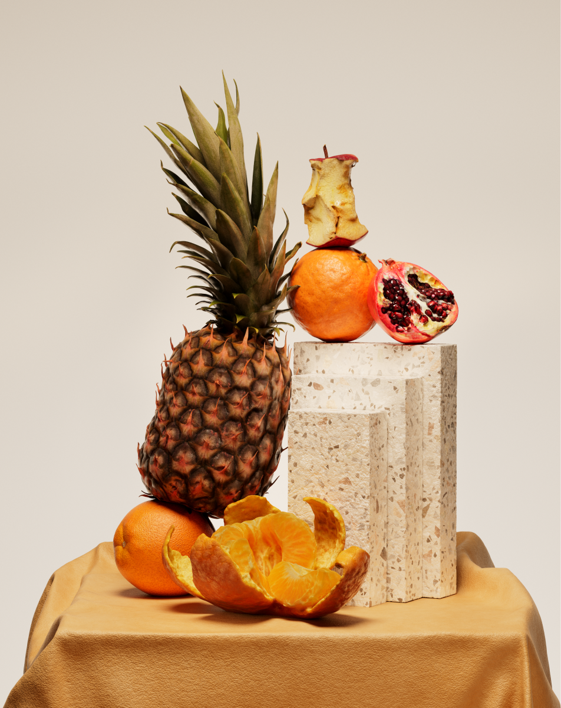
 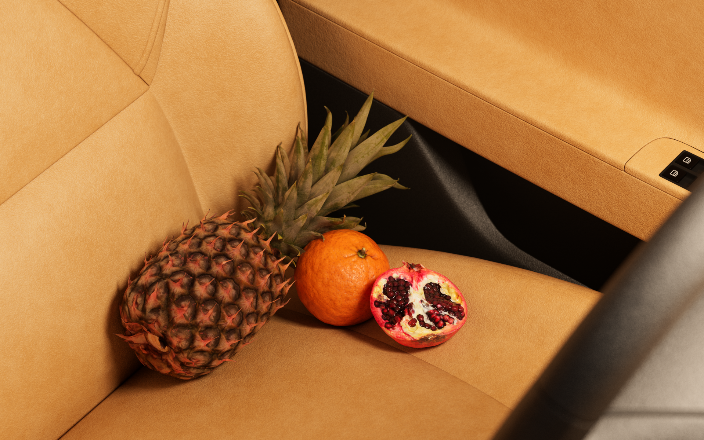
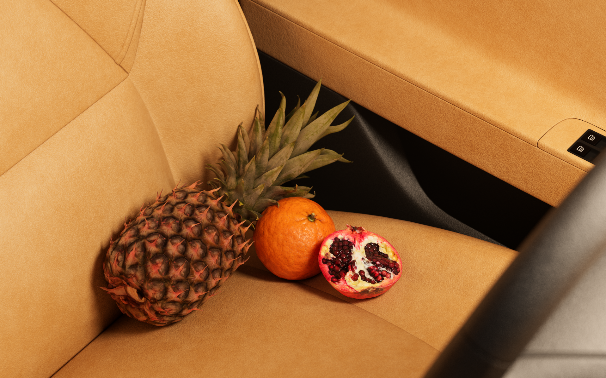

 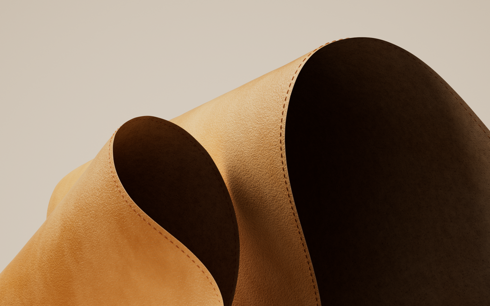
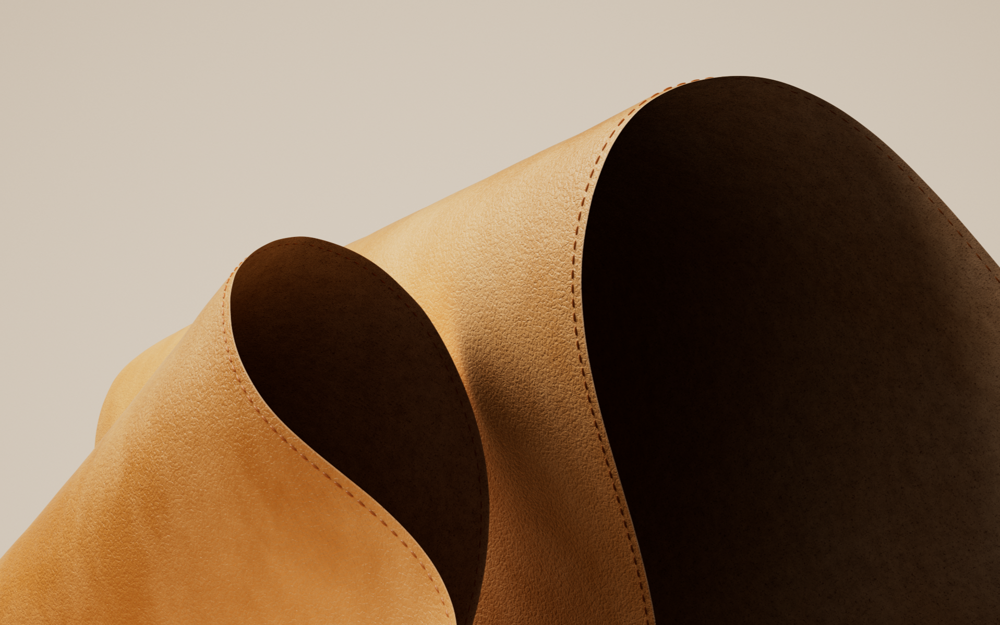
 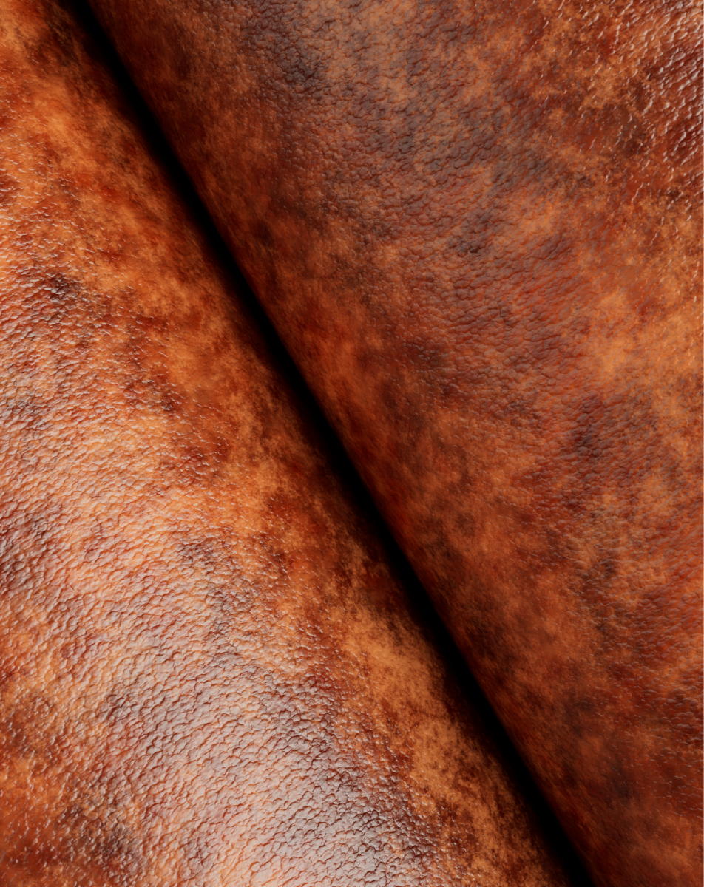
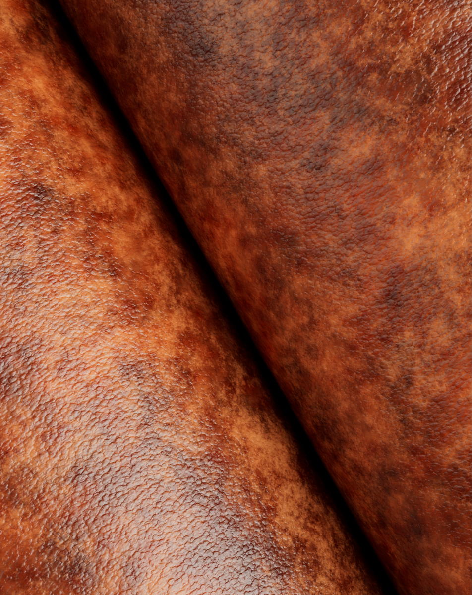